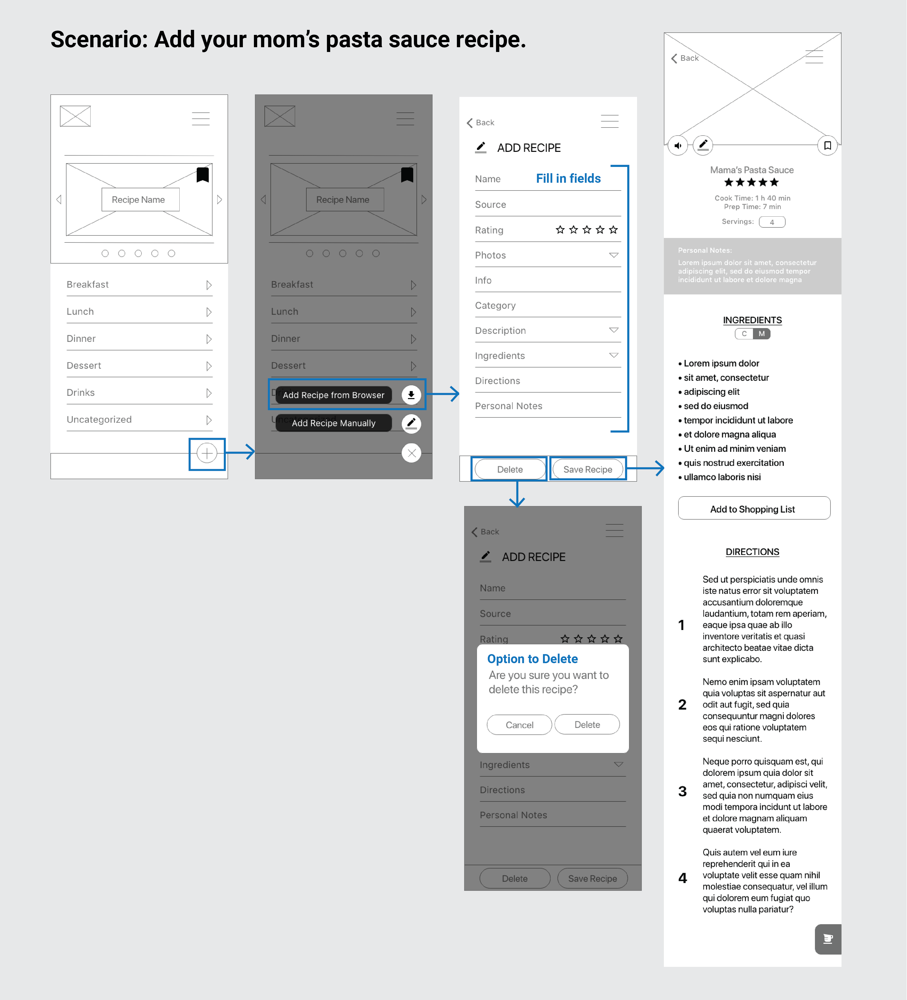
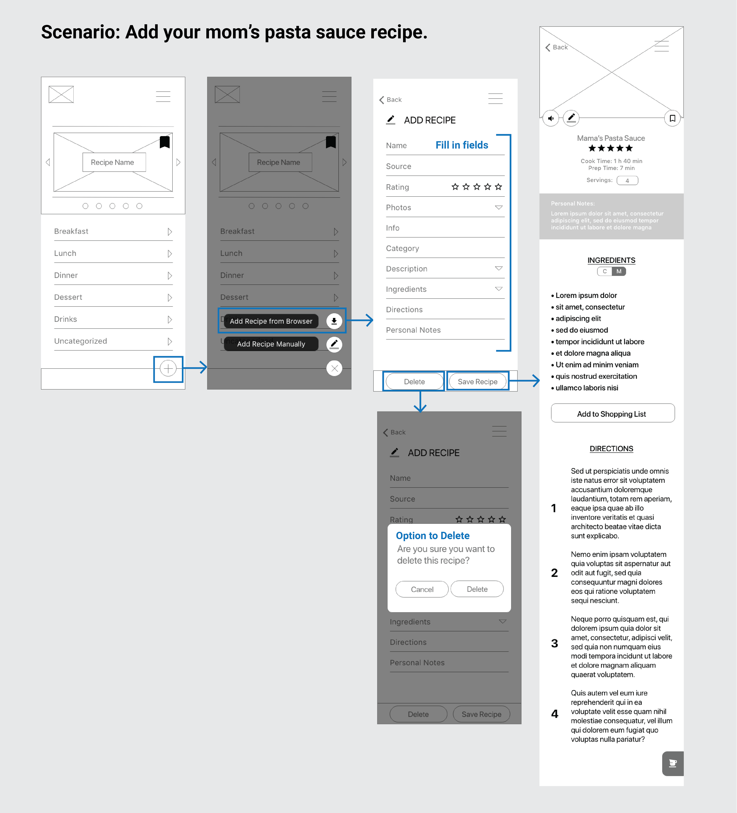

Recipe Management Case Study
RecipeTin is a mobile application that is the modern take on collecting recipe cards. Store your recipes in one place and keep tabs on recipes you’ve been meaning to try. RecipeTin makes life easier when it comes to recipe organization, meal planning, and cooking.
THE TEAM
Annie Diep & Grant Specht
TOOLS
Miro, Illustrator, Adobe XD, Trello, and G Suite
MY DELIVERABLES
User Interviews, Survey, Affinity Diagram, Feature Prioritization, User Flow, Sketches, and Hi-Fi Prototype.
PROBLEM
Millennials are always on the go, they need a solution to manage their recipes and make cooking easier.
SOLUTION
We did this by creating a recipe management system that imports recipes from the web and digitizing recipes that have been passed down. Additionally, cooking is a process and we want to empower our users with tools so they can focus on actually cooking.
RESEARCH
Through user interviews and surveys, we discovered that our users currently don’t have a good solution for managing their recipes. In an effort to stay focused, we synthesised our data to concise points that would guide us through this process. Below are the 5 main takeaways.
Our users primarily turned to browser bookmarks and paper copies, below are our indirect competitors in our competitive analysis.

DEFINITION
We created a user persona from the insights we gathered to help us empathize with our user and further guide us in our design process.
Next we took the opportunities identified from our competitive analysis and prioritized our features based on the user’s needs and motivations.

A user flow diagram gave us a big picture view of RecipeTin. From this we quickly learned that our homepage would house our categories, bookmarked recipes, and call to action.

ITERATION
Sketches and Wireframes
Sketches allowed us to quickly ideate different ways a user could flow through screens and identify gaps before moving to wireframes. For instance:

Below are our wireframes with 2 scenarios:
 

Testing & Improvements
After wireframing, we asked our users to perform a series of tasks. In these user tests we asked our users to: add a recipe you’d like to try from Bon Appetit, add a recipe that was passed down, create a shopping list, etc.
Much to our surprise, we had the most problems with the menu.
There were a couple more minor adjustments made but they were all related to mapping in the prototype.
Hi-Fi Prototype
Our team decided to keep RecipeTin simple and clean with a calm blue and a pop of orange in our High-Fidelity Prototype.

Add video walkthrough
REFLECTION
Conclusion & Next Steps
- Users informed us that they would use our app.
- People want ease and convenience when it comes to searching for recipes. This should be the guiding compass as improvements and features are made.
- Moving forward, we’d like to allow users to import recipes via a photo in order to digitize their recipe.
- We would also like to open this app up to a platform where users can share recipes with their friends and family.